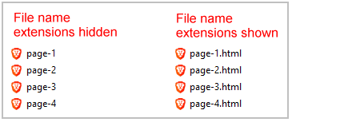
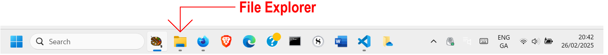
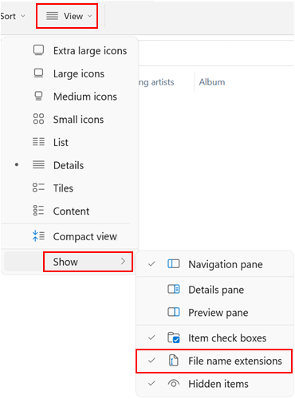
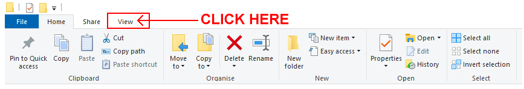
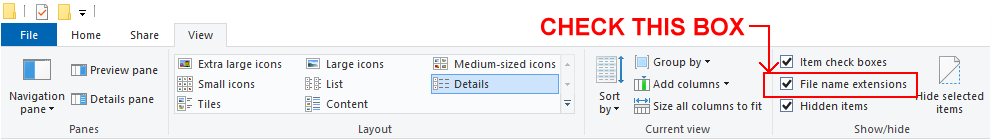
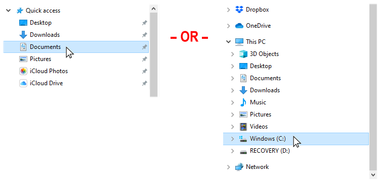
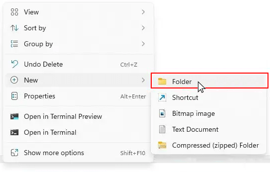
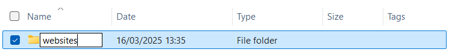
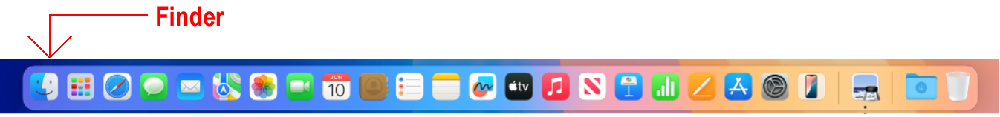
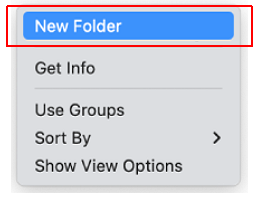

Learning Goals
At the end of this Tutorial, you will be able to:
- On Windows and macOS, create a logical folder structure for the various files typically used in front-end web projects.
- View the full names of files in File Explorer on Microsoft Windows.
Introduction to files and folders
Before diving into front-end development, it's important to understand how to organise your work on your computer using files and folders.
Files are individual digital items, each containing specific information. Examples include:
- Documents (like text files)
- Images (photos and graphics)
- Web pages (HTML files)
- Stylesheets (CSS files)
Each file has two parts to its name: the base name (like products) and the extension (like .html), which tells your computer what type of file it is.
Folders are containers that group together related files. Think of them like physical folders in a filing cabinet. Folders can contain:
- Files
- Other folders (sometimes called subfolders)
A logical folder structure ensures you can:
- Find files quickly
- Keep related items together
- Share your work more easily
- Avoid broken links between files
Viewing the full names of files in Windows
You will find it easier to work with the various types of files you will meet in web development when you can see the full name of each file.
By default, the Finder on Apple Macs shows the name of every file in full.
Microsoft Windows, however, hides the second part of file names, known as the file name extension.
Follow the steps below to view file name extensions in Windows 11.
- Open File Explorer by clicking its icon on the Taskbar along the bottom of the screen. 
- Click the View menu and then the Show command.
- From the sub-menu now displayed, select the File name extensions option. 
And here are the steps for Windows 10:
- Open File Explorer.
- In the menu at the top of the screen, click the View option. 
- You are now shown a new ribbon of options. Check the box named File name extensions. 
✅ In future, all files will shown with their full file name that includes the file name extension.
Creating your folder structure
Before building web pages, create a dedicated storage location on your computer. Web pages can involve multiple files: a HTML file, CSS stylesheets, images, JavaScript code, and audio tracks and videos.
That’s a lot of files to keep track of!
Creating your ‘main’ folder
Your first step is to create a üìÅ folder on your computer to store all your web design work – all your files and sub-folders. You can think of this as your ‘main’ or ‘high-level’ folder.
For Microsoft Windows users, here are the steps:
- Open File Explorer.
- In the left-hand column, click either on Documents or your C: drive. 
- On the next screen displayed, in the blank space at the right side, right-click and choose New | Folder from the context menu. 
- Give your new folder this name: websites.

DO NOT type upper-case letters. Type websites.
DO NOT type 'Websites' or 'WEBSITES'.
DO NOT type blank spaces such as 'web sites'.
Here are the steps for Apple Mac users:
- Open Finder. 
- In the left-hand sidebar, click on Documents or your Home folder.

- In the main window area, right-click (or control + click) on empty space and select New Folder from the context menu. 
- Name your new folder websites.
✅ That’s it.
In future, you will never need to wonder where your web-related files are located on your computer ‚Äì they will always be in your üìÅ websites folder.
Creating your ‘exercises’ sub-folder
Creating your ‚Äòmain‚Äô üìÅ websites folder is only a first step. You will be working with many dozens of files in this course. To keep your files organised, you will be creating a number of sub-folders. And many of these will, in turn, contain sub-folders of their own.
Follow these steps to create a sub-folder to store the exercise files you will work with in the next few Tutorials.
- In Windows, open File Explorer.
- Open your üìÅ websites folder.
- Inside your websites folder, right-click and choose New | New Folder from the context menu.
- Give your new sub-folder this name: exercises
For Apple Mac users:
- In Finder, open your websites folder.
- Inside the websites folder, right-click (or control + click) and select New Folder from the context menu.
- Name your new sub-folder exercises.
DO NOT type upper-case letters. Type exercises.
DO NOT type 'Exercises' or 'EXERCISES'.
✅ Another task completed. Your folder and sub-folder structure should now look as shown below.

Note that your exercises folder is inside your websites folder.
More learning resources
Tutorial Quiz
Tutorial Podcast
YouTube Videos
Windows 11 File Explorer Overview